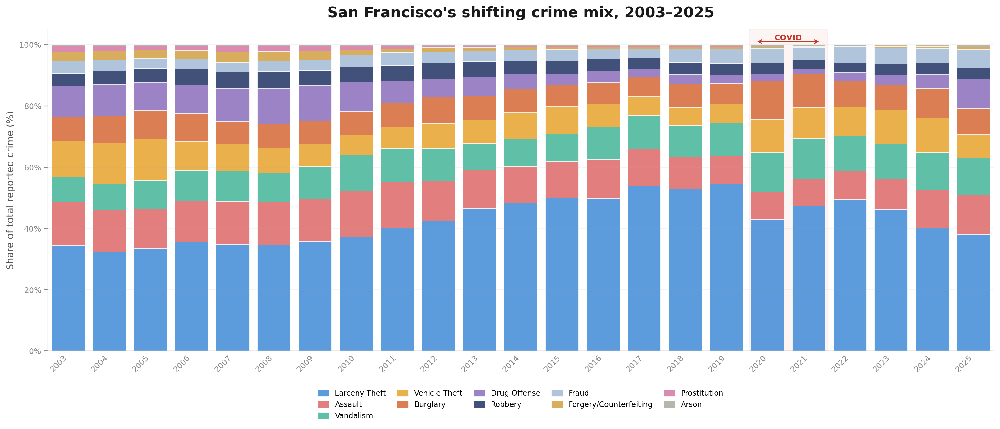

INVESTIGATING OFFICERS: Rupak Kadhare, Sandesh, Matias
SOURCE: San Francisco Police Department Incident Reports, published through SF OpenData. Two separate datasets — Historical (2003–May 2018) and Current (2018–Present) — were merged and cleaned into a single unified dataset with standardized crime categories.
SCALE: 1,732,611 individual crime reports spanning 22 years (2003–2025), across 10 police districts and 11 unified crime categories: Larceny Theft, Vehicle Theft, Assault, Burglary, Vandalism, Drug Offense, Robbery, Fraud, Forgery/Counterfeiting, Arson, and Prostitution.
FIELDS PER RECORD: Crime type, incident date, time of day, day of week, GPS coordinates (latitude/longitude), and police district.
KEY CONCEPT — "CRIME DNA": Every district has a unique genetic makeup — the percentage breakdown of crime types within its borders. We call this its Crime DNA. Central District in 2019: 64% Larceny Theft, 10% Vandalism, 7% Assault, 6% Burglary, 4% Fraud, 3% Vehicle Theft, and smaller traces of the rest. These sequences were remarkably stable for over a decade — until a pandemic mutated them.
THE QUESTION: Did COVID-19 permanently rewrite San Francisco's Crime DNA — or did the old code restore itself when the city reopened?

COVID-19 did not simply disrupt crime levels but it also changed the underlying structure of how crime is distributed across San Francisco. For nearly two decades, the city exhibited a stable Crime DNA. The pandemic acted as a structural shock, breaking this stability and reshaping crime patterns across districts. Crucially, these changes did not revert after the city reopened because of which San Francisco did not return to its previous stability but it transitioned into a new one.